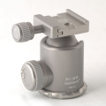

无忌
器材库
全部器材
产品年表
名词百科
榜单
器材库
> 云台 > NB2-AX

冈仁波齐
NB2-AX
分类
云台
点评
0 条
图片
3 张
评测
0 篇
这是款限量生产的银色版纪念云台，集坚固稳定、方便携带于一身，采用硬质氧化表面处理，非常耐磨损，18度灰色硅胶旋钮，以及中文冈仁波齐激光标刻。
产品类型
云台
综合评分
暂无评分
无忌评测
暂无评测
规格参数
网友点评
(0)
产品图 / 样片
(3)
评测文章
(0)
详细规格
发布日期
未知
厂家推荐价格
2,080.00 （人民币）
云台类型
球形云台
适配脚架
捷信1227, 1228, 1127, 1128
高度
96mm
最大负重
32kg
自重
0.54kg
该产品暂无存档的网友点评
产品图 / 样片
冈仁波齐 NB2-AX
评测 / 相关文章
该产品暂无存档的评测文章